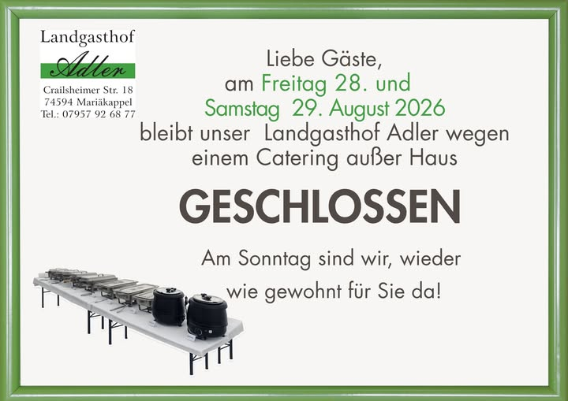

Herzlich willkommen im Landgasthof Adler!
Seit über 30 Jahren stehen wir für Qualität, Gastfreundschaft und echte Leidenschaft für gutes Essen.
Unser Ziel ist es, dass Sie sich bei uns wohlfühlen und eine schöne Auszeit vom Alltag genießen können. Wir freuen uns, Sie bei uns begrüßen zu dürfen und wünschen Ihnen einen angenehmen Aufenthalt sowie guten Appetit!
Für Anlässe jeder Art – sprechen Sie uns an, wir planen Ihre Veranstaltung.
Mo–Fr in Kreßberg & Umgebung (Kindergärten, Schulen, Firmen & Privathaushalte).
Bestellannahme für den Mittagstisch bis 9 Uhr.
mit dem gesamten Adler-Team
Aktuelle Hinweise & Neuigkeiten
Hier informieren wir Sie kurzfristig über Änderungen oder Aktionen.

Adresse: Crailsheimer Straße 16, 74564 Kreßberg - Mariäkappel
Telefon: 07957 926877
🍳 Warme Küche: An unseren Öffnungszeiten verwöhnen wir Sie durchgehend mit warmer Küche bis 20:00 Uhr.